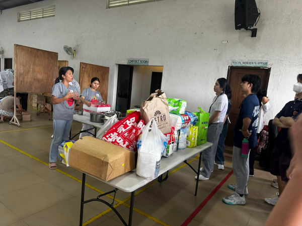

Give, and see exactly where it goes.
Track your donation from intake to delivery, checkpoint by checkpoint.
Ask me anything


Every donation gets a unique ID the moment it's logged, then a checkpoint trail you can follow from intake to delivery — recorded in real time by field coordinators and tied to each donation.
Track your donation from intake to delivery, checkpoint by checkpoint.
Check active relief operations near you and follow their progress.
Create an account or use the demo log-in, so every pledge is tied to you and your history stays in one place.
Pick an active drive, choose what you're giving, and review your pledge before you confirm. Each pledge becomes its own Donation ID.
Follow your Donation ID from intake to delivery as field coordinators log each checkpoint in real time.
Illustrative walkthrough — sample names, amounts, and IDs are not live data.
A snapshot of active campaigns. Every peso pledged here becomes its own trackable Donation ID.
Loading active drives…
The system is built to capture the same kind of evidence a coordinator would collect on paper — just structured, timestamped, and attached to a Donation ID.
Illustrative for this prototype — evidence categories are part of the system design, not live uploaded files yet.
Photos from DAONG-affiliated intake events and facility visits — the kind of documentation the checkpoint trail is built to capture at scale.


 Faces obscured for privacy
Faces obscured for privacy
Contribute through a Drive or make a direct pledge. Either way, it's logged as a Donation ID the moment it's received.
Field coordinators log intake, allocation, dispatch, and delivery in real time as goods move.
If something looks off — a delay, a weight mismatch, a route change — it's flagged for a coordinator to verify. Never an automatic accusation.
Yes. You need to log in to pledge, so each donation is tied to you and your pledges stay in one place. This also makes it easier to trace every item back to the person who made it possible.
A unique tracking ID, like TN-1001, issued the moment your donation is logged. Every pledge gets its own, so each item or box can be followed independently.
Enter your Donation ID in the search box at the top of this page, or open Track a Donation. You'll see each checkpoint as it is recorded by the field team.
A delay, a weight mismatch, or a route change is flagged for a coordinator to verify. It's a review, never a rush to blame or assume bad intent.
To active relief operations across Luzon. Browse the Donation Drives page to see which campaigns are running and which support areas they cover.
Ask the assistant about drives, tracking, or how a pledge works.